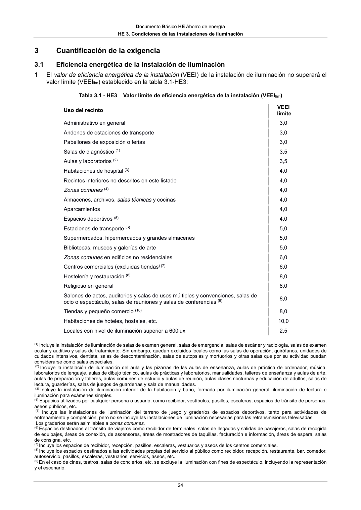

DB-HE · 3 Cuantificación de la exigencia · 3.1 Eficiencia energética de la instalación de iluminación · versión 2022-06-14
SHA256: 7f890bd495552e979f83f72c5f5c7b642e745911a8e343a7b5b73023ce0e1f05 · página física 24 de 56 · métodos de encabezado
solo si están cotejados.
Formatos: Markdown · JSON de bloques · PDF p. 24 · imagen PNG
Documento Básico HE Ahorro de energía HE 3. Condiciones de las instalaciones de iluminación 24 3 Cuantificación de la exigencia 3.1 Eficiencia energética de la instalación de iluminación 1 El valor de eficiencia energética de la instalación (VEEI) de la instalación de iluminación no superará el valor límite (VEEIlim) establecido en la tabla 3.1-HE3: Tabla 3.1 - HE3 Valor límite de eficiencia energética de la instalación (VEEIlim) Uso del recinto VEEI límite Administrativo en general 3,0 Andenes de estaciones de transporte 3,0 Pabellones de exposición o ferias 3,0 Salas de diagnóstico (1) 3,5 Aulas y laboratorios (2) 3,5 Habitaciones de hospital (3) 4,0 Recintos interiores no descritos en este listado 4,0 Zonas comunes (4) 4,0 Almacenes, archivos, salas técnicas y cocinas 4,0 Aparcamientos 4,0 Espacios deportivos (5) 4,0 Estaciones de transporte (6) 5,0 Supermercados, hipermercados y grandes almacenes 5,0 Bibliotecas, museos y galerías de arte 5,0 Zonas comunes en edificios no residenciales 6,0 Centros comerciales (excluidas tiendas) (7) 6,0 Hostelería y restauración (8) 8,0 Religioso en general 8,0 Salones de actos, auditorios y salas de usos múltiples y convenciones, salas de ocio o espectáculo, salas de reuniones y salas de conferencias (9) 8,0 Tiendas y pequeño comercio (10) 8,0 Habitaciones de hoteles, hostales, etc. 10,0 Locales con nivel de iluminación superior a 600lux 2,5 (1) Incluye la instalación de iluminación de salas de examen general, salas de emergencia, salas de escáner y radiología, salas de examen ocular y auditivo y salas de tratamiento. Sin embargo, quedan excluidos locales como las salas de operación, quirófanos, unidades de cuidados intensivos, dentista, salas de descontaminación, salas de autopsias y mortuorios y otras salas que por su actividad puedan considerarse como salas especiales. (2) Incluye la instalación de iluminación del aula y las pizarras de las aulas de enseñanza, aulas de práctica de ordenador, música, laboratorios de lenguaje, aulas de dibujo técnico, aulas de prácticas y laboratorios, manualidades, talleres de enseñanza y aulas de arte, aulas de preparación y talleres, aulas comunes de estudio y aulas de reunión, aulas clases nocturnas y educación de adultos, salas de lectura, guarderías, salas de juegos de guarderías y sala de manualidades. (3) Incluye la instalación de iluminación interior de la habitación y baño, formada por iluminación general, iluminación de lectura e iluminación para exámenes simples. (4) Espacios utilizados por cualquier persona o usuario, como recibidor, vestíbulos, pasillos, escaleras, espacios de tránsito de personas, aseos públicos, etc. (5) Incluye las instalaciones de iluminación del terreno de juego y graderíos de espacios deportivos, tanto para actividades de entrenamiento y competición, pero no se incluye las instalaciones de iluminación necesarias para las retransmisiones televisadas. Los graderíos serán asimilables a zonas comunes. (6) Espacios destinados al tránsito de viajeros como recibidor de terminales, salas de llegadas y salidas de pasajeros, salas de recogida de equipajes, áreas de conexión, de ascensores, áreas de mostradores de taquillas, facturación e información, áreas de espera, salas de consigna, etc. (7) Incluye los espacios de recibidor, recepción, pasillos, escaleras, vestuarios y aseos de los centros comerciales. (8) Incluye los espacios destinados a las actividades propias del servicio al público como recibidor, recepción, restaurante, bar, comedor, autoservicio, pasillos, escaleras, vestuarios, servicios, aseos, etc. (9) En el caso de cines, teatros, salas de conciertos, etc. se excluye la iluminación con fines de espectáculo, incluyendo la representación y el escenario.
